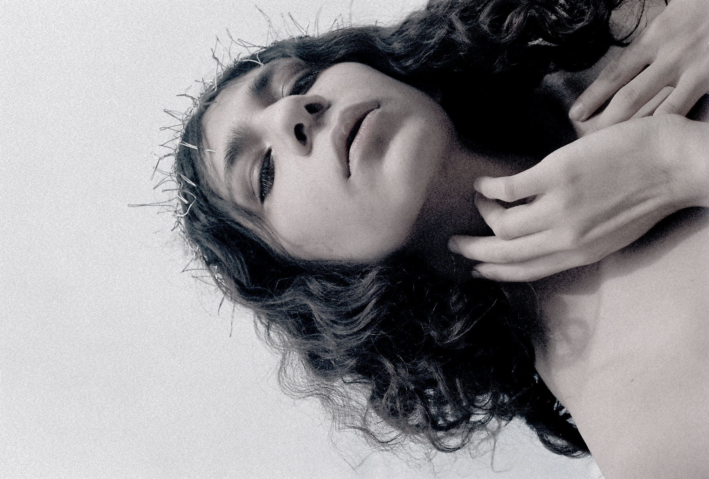
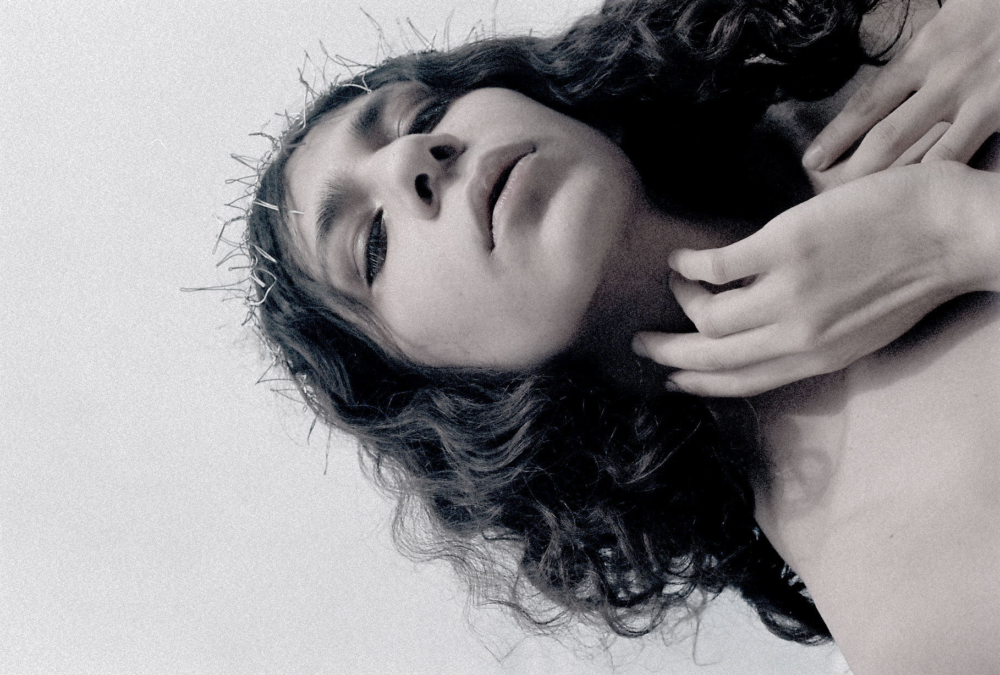

“A Diosito también se lo chingaron” es un proyecto de moda conceptual que expresa la visión de Betito Jarillo y mía sobre la identidad mexicana.
Identidad propia de una sociedad que en su mayoría fundamenta su vivir en la religión católica, y tenemos como guía y pastor a la figura de Jesus en la cruz, quien se sacrificó por nosotros, venerándolo pero al mismo tiempo rechazando el mismo destino; donde nuestras relaciones terminan por volverse una situación de chingar o ser chingado.
Vestido drapeado montado sobre base de yeso moldeada a un cuerpo femenino de talla 6, con monturas de unicel que simulan una cruz atravesando al portador.
Materiales: chiffon de poliester, encaje de poliester, encaje de algodón teñido con sangre menstrual, unicel, vendas de yeso
Fotografía1: Eugenio Schulz
Vestido: Betito Jarillo y Milla de León
Styling: Eugenio Schulz y Milla de León
Fotografía 2: Milla de León


 
